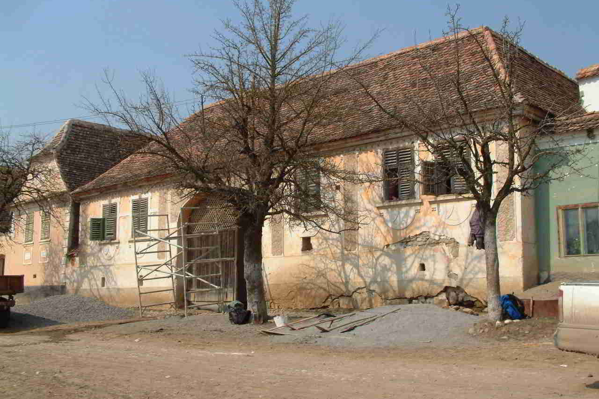
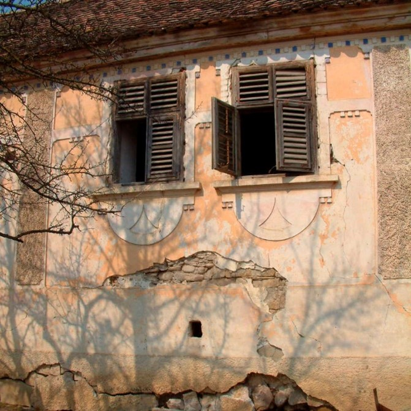
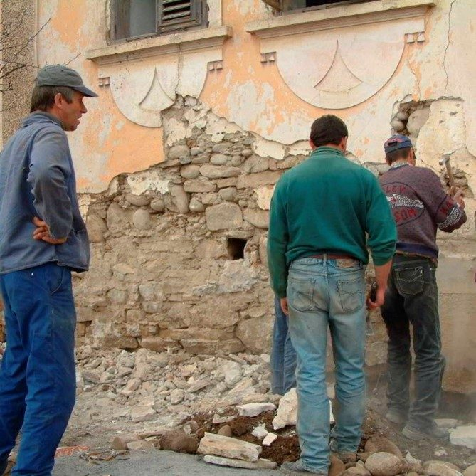
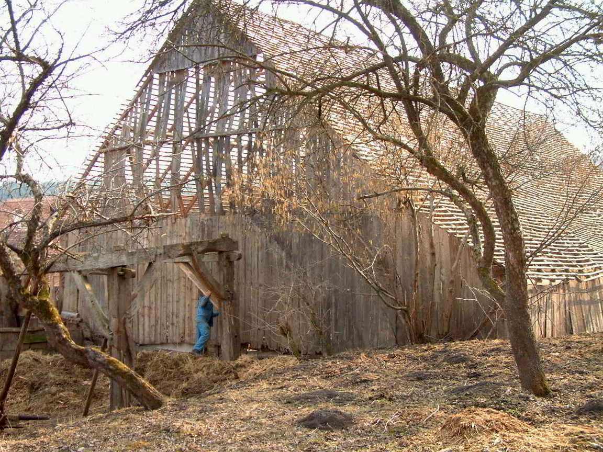
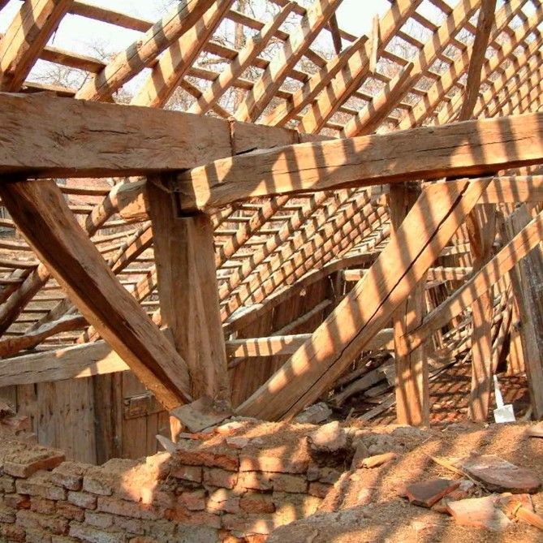
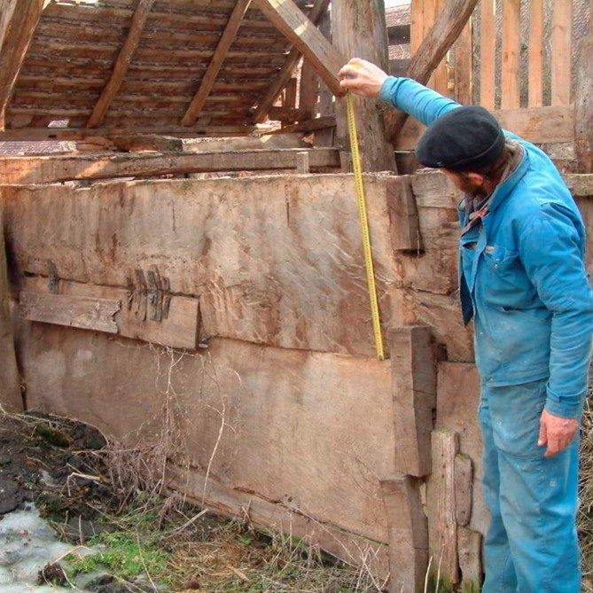

General Building Conservation
Our methods of procedure are strict. First we meet with local representatives, discuss their ideas for development, assess the structures at risk and appoint a conservation expert. The one proviso is an insistence on sympathetic use of traditional materials and the principle of minimum intervention, with patch and repair taking precedence over renewal, and as much as possible being retained of the original fabric.

Above and below, work in progress on a village house in Archita



Above and below, a typical wooden barn

